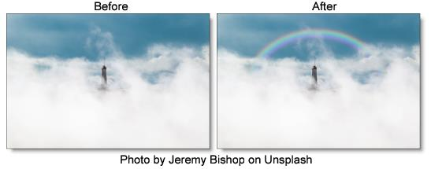

Rainbow
Description
Recreates arced rainbows of spectral colors, usually identified as red, orange, yellow, green, blue, indigo, and violet, that appear in the sky as a result of the refractive dispersion of sunlight in drops of rain or mist.
Category
Light.
Controls
Light
Blend
Determines the blend mode to be used to add the rainbow.
Add
The rainbow is combined with the image using an Add blend mode.
Screen
The rainbow is combined with the image using a Screen blend mode. This looks kind of like the Add blend mode, but highlights are retained.
Normal
The rainbow is added to the image using a normal composite function.
Amount
Sets the intensity of the rainbow.
Displacement
Displaces the rainbow by the luminance values of the image. This “fakes” the effect of the rainbow wrapping over objects in the image.
Blur
Sets the softness of the rainbow.
Rainbow
Blend
The rainbow can be added to the entire image or limited to a matte.
Rainbow Only
The rainbow is added to the entire image.
Matte
The rainbow is added only in areas of the matte.
Position
The rainbow position can be adjusted by clicking and dragging the on-screen control or sliders.
Radius
The size of the rainbow.
Aspect
Sets the aspect ratio of the rainbow. Positive values stretch the rainbow horizontally and negative values stretch it vertically.
Thickness
Sets the thickness of the rainbow’s bands.
Crop
Offset
The rainbow is cropped based on the Offset value. The higher the value, the more rainbow you see. A value of -100 shows no rainbow at all while 100 displays a complete 360 degree rainbow.
Angle
Sets the angle of the crop.
Softness
Sets the softness of the crop’s edge.
Matte
A matte can be used to limit where the rainbow will be placed. Wherever there is white in the matte is where the rainbow will be added. Go to the
Matte parameters to see how they work.
Note: To use a matte to limit where the rainbow will be added, Rainbow > Blend must be set to Matte.
Alpha
Rainbow Under Source
Composites the image over the rainbow.